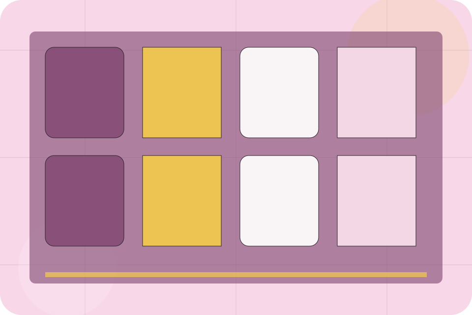
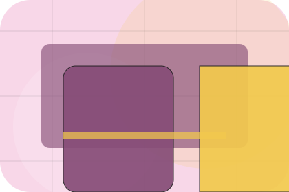
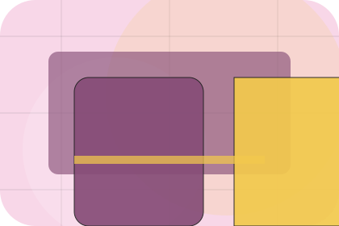
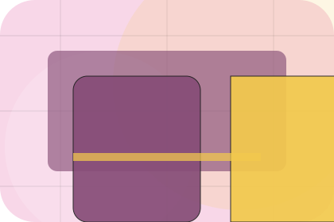
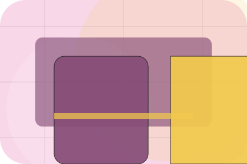
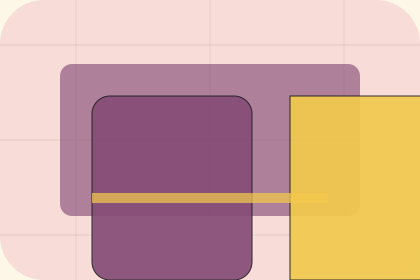

Booking / 01
Booking by Table
Booking shaped for restaurants, cafes & food service decisions.
Booking opens as a clear restaurants decision hub: what Table offers, who it helps, why it matters, and which route to take first.
The first screen combines positioning, proof, primary action, and fast internal navigation, so people can act immediately or compare the rest of the booking route with context.
Check availabilityPlan the visitReserve with context

Booking / 02
Send the right details
Reservations makes the contact path concrete: what to send, how the response works, and what Table needs before visitors reserve a table.
The section reduces contact friction by naming the channel, expected detail, privacy path, and response expectation instead of dropping visitors into a generic form.
Explore Booking
Details
What information helps Table respond with a useful answer instead of a generic reply.

Timing
How the visitor should think about response, urgency, location, or availability.

Reply
The expected next message keeps scope, timing, and the first practical step clear.
Booking / 03
Send the right details
Dates makes the contact path concrete: what to send, how the response works, and what Table needs before visitors reserve a table.
The section reduces contact friction by naming the channel, expected detail, privacy path, and response expectation instead of dropping visitors into a generic form.
Explore BookingDetails
What information helps Table respond with a useful answer instead of a generic reply.
Timing
How the visitor should think about response, urgency, location, or availability.
Reply
The expected next message keeps scope, timing, and the first practical step clear.
Booking / 04
Send the right details
Groups makes the contact path concrete: what to send, how the response works, and what Table needs before visitors reserve a table.
The section reduces contact friction by naming the channel, expected detail, privacy path, and response expectation instead of dropping visitors into a generic form.
Explore BookingDetails
What information helps Table respond with a useful answer instead of a generic reply.
Timing
How the visitor should think about response, urgency, location, or availability.
Reply
The expected next message keeps scope, timing, and the first practical step clear.
Booking / 05
Send the right details
Policies makes the contact path concrete: what to send, how the response works, and what Table needs before visitors reserve a table.
The section reduces contact friction by naming the channel, expected detail, privacy path, and response expectation instead of dropping visitors into a generic form.
Explore Booking
Details
What information helps Table respond with a useful answer instead of a generic reply.

Timing
How the visitor should think about response, urgency, location, or availability.

Reply
The expected next message keeps scope, timing, and the first practical step clear.
Booking / 06
Send the right details
Confirmation makes the contact path concrete: what to send, how the response works, and what Table needs before visitors reserve a table.
The section reduces contact friction by naming the channel, expected detail, privacy path, and response expectation instead of dropping visitors into a generic form.
Explore BookingBooking / 07
Send the right details
Requests makes the contact path concrete: what to send, how the response works, and what Table needs before visitors reserve a table.
The section reduces contact friction by naming the channel, expected detail, privacy path, and response expectation instead of dropping visitors into a generic form.
Explore BookingBooking / 08
Send the right details
Reminders makes the contact path concrete: what to send, how the response works, and what Table needs before visitors reserve a table.
The section reduces contact friction by naming the channel, expected detail, privacy path, and response expectation instead of dropping visitors into a generic form.
Explore BookingTable keeps reminders practical: send the key details, choose the right contact route, and know what kind of reply to expect.
Reserve TableBooking / 09
Questions before you reserve a table
Questions handles buying doubts directly so visitors can understand timing, fit, limits, and the safest next step.
Answers are short by design: enough to remove hesitation, not so much that the page turns into documentation before the visitor can act.
Open ContactWhat happens first?
Table starts with a focused intake so the recommendation matches the visitor's context, risk, timing, and readiness.
How is scope kept clear?
Each route explains inclusions, exclusions, documents, timing, and the decision points that affect final delivery.
How is this site different?
The theme uses surreal reservation stage, ornate menu cards, and menu filter, allergen toggle, reservation widget, gallery rather than a shared template rhythm.
Booking / 10
Reserve Table
Table closes the booking route with a clear action, a quick reminder of the value, and a low-friction way to reserve a table.
Visitors who are ready can use the primary action. Visitors who are still comparing can scan the section links, proof, and support routes before they reserve a table.
Reserve TableThe final block keeps the choice simple: act now, compare one more proof route, or send enough detail for a focused response.
Reserve Tabledesire and social confidence
Reserve Table
A sensory restaurant site with pastel stage surfaces, menu cards, room-gallery rhythm, and booking CTAs. Booking ends with a direct path to reserve a table, plus enough context for visitors who still need to compare.

Reserve TableImportant notes before you act
Menus, allergens, prices, and availability must be confirmed by the venue before ordering or booking.